第 18 章 · 全书地图回顾 · 一颗 LED 走过的演化路径
配套代码：oop-in-c/code/18-roadmap/
ch01 到 ch17 走完了。这一章不引入任何新概念，只做一件事：把你写过的 LED 代码，跟 Linux 内核里的真实代码摆在一起看。
终章不教新东西。全部是回顾，是映射，是 C 对比 C++ 的代码对照，是工业级数据，是 Linus 的一句金句。
18.1 file_operations · 是不是很眼熟
Linux 内核里有一个结构体，叫 file_operations。
打开文件调 open。读文件调 read。写文件调 write。关文件调 release。
struct file_operations {
ssize_t (*read)(struct file *, char __user *, size_t, loff_t *);
ssize_t (*write)(struct file *, const char __user *, size_t, loff_t *);
int (*open)(struct inode *, struct file *);
int (*release)(struct inode *, struct file *);
/* ... 更多函数指针 */
};
是不是很眼熟。
它就是你学的 ops 表。一个 struct，里面全是函数指针。
同一个 read，不同的文件系统有不同的实现。ext4 有 ext4 的 read，socket 有 socket 的 read，pipe 有 pipe 的 read。这不就是你学的那条 base->ops->on(base) 调用链吗。
你写的 LedOps，跟内核的 file_operations，是同一个模式。
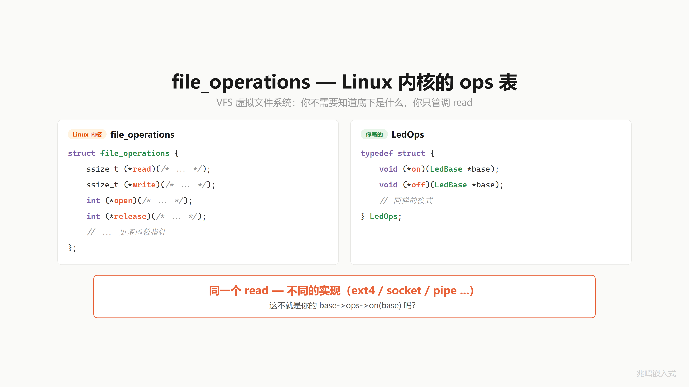
但这只是冰山一角。来看一个更完整的。
18.2 你的 LED 代码 vs Linux I2C 完整链路
你用过 I2C 吧。读传感器、写 EEPROM，都是 I2C。
Linux 内核的 I2C 子系统，跟你的 LED 代码，一模一样的四层架构。
第一层 · 应用层。你的 led_on(me)，内核叫 i2c_transfer(adap, msgs, num)。对上一个口子，不关心硬件长什么样。
第二层 · 抽象层。你的 LedBase 里塞个 ops 指针，LedOps 装函数指针。内核里 i2c_adapter 塞 algo 指针，i2c_algorithm 装函数指针。一个负责传输，一个报告能力。adapter 就是 I2C 控制器对象，algo 这个名字是 Linux 内核的历史叫法，你就当它是 ops 表。这一层定义“必须实现什么“。
第三层 · 实现层。你的 gpio_on(me)，内核叫 rk3x_i2c_xfer(adap, ...)。Rockchip 的 I2C 传输实现，对下操作硬件寄存器。
第四层 · 注册层。你以前要在 main 里手动调 init，内核用 module_platform_driver 一行宏，启动时系统自动找到你的驱动。
同一条调用链，上下完全对应：
你的 LED: led_on(me) → me->ops->on(me) → gpio_on(me)
Linux I2C: i2c_transfer(adap)→ adap->algo->xfer(adap) → rk3x_i2c_xfer(adap)
跟你的 LED 从头到尾，一模一样的四层。
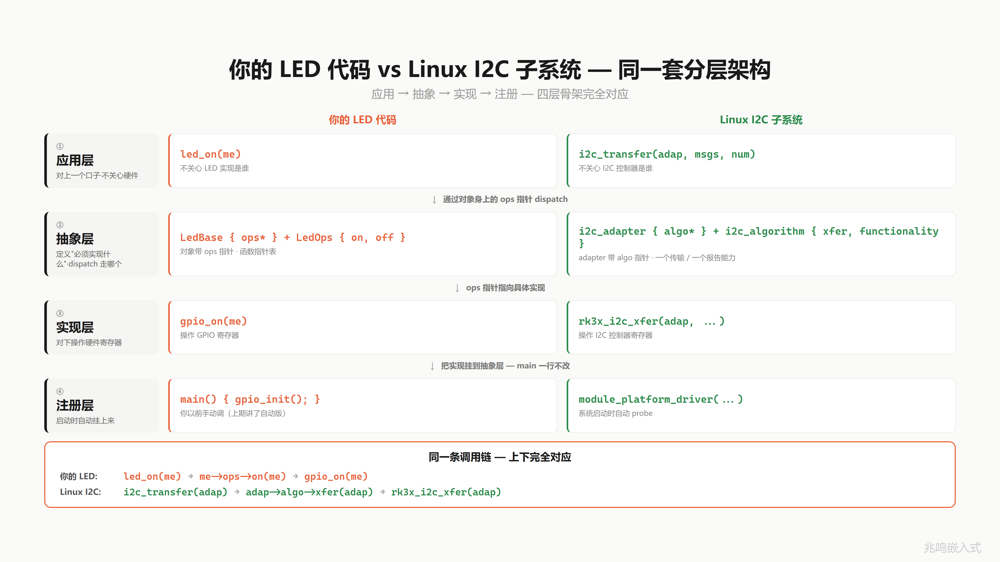
18.3 真实内核代码 · 四层一一对应
来看真实的内核代码，按四层一一对应。代码来自 Linux 内核 drivers/i2c/busses/i2c-rk3x.c。
第一层 · 接口层。i2c_algorithm 真实定义。两个函数指针，一个负责传输，一个报告能力。跟你的 LedOps 一模一样：
struct i2c_algorithm {
int (*xfer)(struct i2c_adapter *adap,
struct i2c_msg *msgs, int num);
u32 (*functionality)(struct i2c_adapter *);
};
第二层 · 实现层。rk3x_i2c_algorithm，把 Rockchip 自己的传输函数填进去。跟你在 gpio_init 里填 gpio_ops，一模一样：
static const struct i2c_algorithm rk3x_i2c_algorithm = {
.xfer = rk3x_i2c_xfer,
.functionality = rk3x_i2c_func,
};
第三层 · 绑定层。probe 函数里把这张表的地址绑到 adapter 上。跟你把 ops 放进 LedBase，一模一样：
static int rk3x_i2c_probe(struct platform_device *pdev)
{
/* 分配对象 */
i2c_dev = devm_kzalloc(&pdev->dev, ...);
/* 绑定 ops 表 */
adap->algo = &rk3x_i2c_algorithm;
/* 注册到 I2C 总线 */
i2c_add_adapter(adap);
}
第四层 · 启动层。module_platform_driver 一个宏告诉内核：我是一个 I2C 平台驱动，启动时自动找到我。
static struct platform_driver rk3x_i2c_driver = {
.driver = { .name = "rk3x-i2c", .of_match_table = ..., .pm = ... },
.probe = rk3x_i2c_probe,
.remove = rk3x_i2c_remove,
};
module_platform_driver(rk3x_i2c_driver);
每一行你都见过。不是教学案例，是真实世界的骨架。
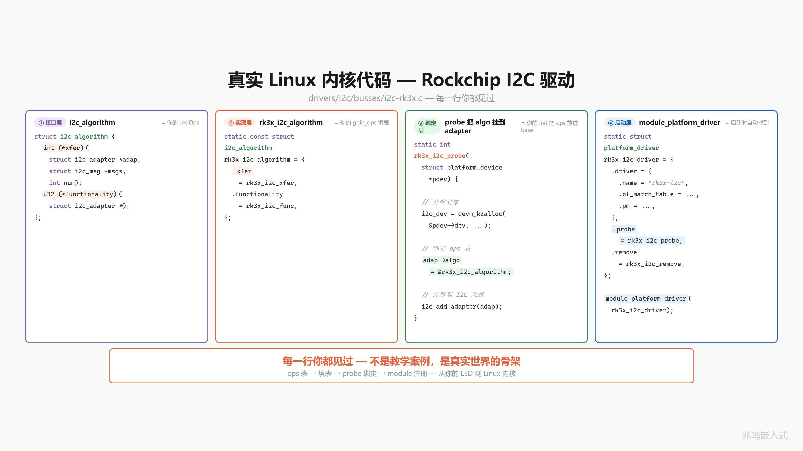
18.4 到处都是 ops
不只是 I2C。
| 子系统 ops 表 | 用途 | 关键函数指针 |
|---|---|---|
file_operations | 文件系统 · 读 / 写 / 打开 / 关闭 | .read .write .open |
i2c_algorithm | I2C 总线 · 数据传输 | .xfer |
spi_controller | SPI 控制器 · 数据传输 | .transfer_one |
gpio_chip | GPIO 控制器 · 引脚操作 | .get .set .direction |
net_device_ops | 网络设备 · 发包 / 收包 | .ndo_start_xmit |
内核到处都是这个模式。一个 struct 装函数指针，不同的驱动填不同的实现。
你学的那套东西，不是教学案例，是真实世界的骨架。
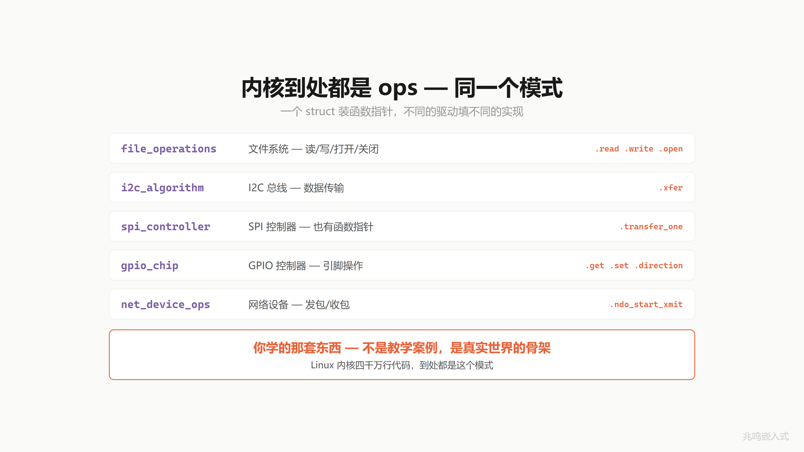
18.5 全系列概念到 Linux 内核映射总表
把每一章学到的招，映射到 Linux 内核里的对应物。
先看顶上这一行：应用层、抽象层、实现层、注册层。所有内核子系统都是这四层。
① 应用层 led_on · vfs_read · i2c_transfer
↓
② 抽象层 LedOps · file_operations · i2c_algorithm
↓
③ 实现层 gpio_on · ext4_read · rk3x_i2c_xfer
↓
④ 注册层 main · module_init · module_platform_driver
往下看每一项：
| 概念 | 你写的（LED） | Linux 内核 | 系列阶段 |
|---|---|---|---|
| struct 封装数据 | LedGpio { pin, ... } | 到处是 struct | 封装 |
| me 指针 | LedGpio *me | struct device · i2c_client · spi_device · platform_device | 封装 |
| static 信息隐藏 | static void gpio_on | 本地用 static · 跨模块用 EXPORT_SYMBOL | 信息隐藏 |
| 前缀命名 | led_ · gpio_ · led_gpio_ | i2c_ · spi_ · gpio_ · vfs_ | 命名 |
| init / deinit | led_gpio_init / led_gpio_deinit | probe / remove | 构造析构 |
| 模块自动注册 | main() 手动调 init | module_init · .initcall · do_initcalls | 链接初始化 |
| 全局设备句柄 | LedBase *g_led_error | struct device *（内核） · /dev/xxx（用户层） | 向上转型 |
| struct 嵌套继承 | LedGpio { LedBase base } | struct i2c_client { struct device } | 继承 |
| 函数指针 + ops 表 | LedOps { on, off } | file_operations · gpio_chip · i2c_algorithm { xfer, functionality } | 函数指针 |
| 统一接口 + dispatch | led_on() → base->ops->on | vfs_read() → fops->read | 多态 |
| 向下转型 | container_of(base, LedGpio, base) | 出现数万次 | 向下转型 |
| 纯虚 / 虚函数 / 接口 | NULL 检查 / 默认实现 / 全必填 | file_operations 混合模式 | 虚函数 |
每一行你学过的东西，内核里都有对应。分层一模一样。每一项一模一样。
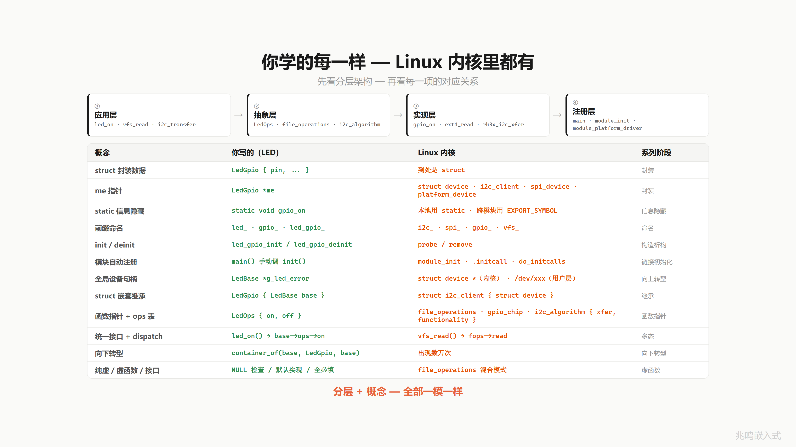
18.6 C 对比 C++ 三组代码对照
接下来把你 18 章写的 C 代码，跟 C++ 的写法摆一起看。每一对，C++ 都帮你做了你亲手做的事。
挑了三组最有戏的：多态 dispatch、向下转型、模块自动注册。
18.6.1 多态 dispatch
先看多态 dispatch。
左边是 C。一个 LedOps 结构体装两个函数指针 on 和 off。LedBase 里有一个 ops 指针。led_on 调用 base->ops->on(base)，两次跳转：
typedef struct {
void (*on)(LedBase *);
void (*off)(LedBase *);
} LedOps;
struct LedBase {
LedOps *ops; /* 对象身上的 ops 指针 */
};
void led_on(LedBase *base)
{
base->ops->on(base); /* 两次跳转 */
}
led_on(red); /* 调用方写法 */
右边是 C++。class LedBase 里两个 virtual 函数。一个基类引用 red 绑到 led_gpio，直接调 red.on()。编译器悄悄查 vptr、查 vtable、找到 on 函数。也是两次跳转：
class LedBase {
public:
virtual void on() = 0;
virtual void off() = 0;
};
/* 编译器自动加 vptr · 自动建 vtable */
LedBase &red = led_gpio; /* 基类引用 → 子类对象 */
red.on(); /* virtual 调用 */
底层完全一样：
base->ops->on(base) ≡ red.on()
LedOps 就是 vtable。ops 指针就是 vptr。base->ops->on 就是 red.on。
C 你亲手做，C++ 编译器替你做。
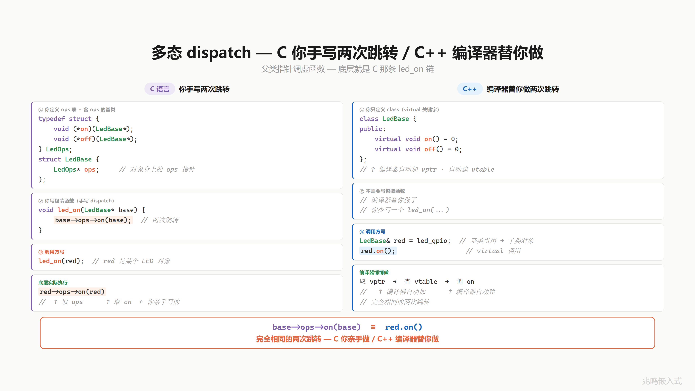
18.6.2 向下转型
向下转型这一对最有戏。
左边是 C 的 container_of。一个宏：拿当前指针，减去成员在 struct 里的偏移量，得到外层 struct 的起始地址。一行宏，编译期算偏移，运行时就一条减法指令。零开销。
#define container_of(ptr, type, member) \
((type *)((char *)(ptr) - offsetof(type, member)))
void led_handle(LedBase *base)
{
LedGpio *me = container_of(base, LedGpio, base);
gpio_set(me->pin);
}
/* 编译期 · 一条减法指令 · 零运行时开销 */
右边是 C++ 的 dynamic_cast。RTTI 运行时类型识别。每个含 virtual 的类都带 type_info，dynamic_cast 跑一次去查这张表，确认指针的真实类型再返回。运行时有开销。
/* 编译器生成 RTTI 信息 · 每个 virtual 类带 type_info */
void led_handle(LedBase *base)
{
LedGpio *me = dynamic_cast<LedGpio *>(base);
if (me) gpio_set(me->pin);
}
/* 运行时 · 查 type_info 表 · 有性能开销 */
同样是“基类指针反推子类“，C 在编译期就算完了。C++ 运行时算。
container_of 一旦编译完，就是一条减法指令。
这是 C 在嵌入式不输 C++ 的关键：零运行时代价做完同样的事。
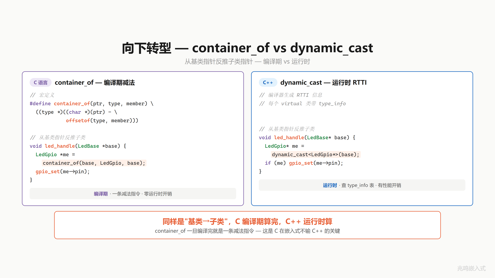
18.6.3 模块自动注册
最后这一对。上一章讲到 main 函数一行不改，模块自己挂上来。
左边是 C。led_gpio_init 是初始化函数，加一个 module_init 宏。宏展开把这个函数地址塞进一个特殊 section，叫 .initcall6.init。链接器把所有 .initcall 段合并成一片，启动时 do_initcalls 遍历这一片，挨个调用：
static int led_gpio_init(void)
{
/* 注册 LED 驱动 */
return 0;
}
module_init(led_gpio_init);
/* 宏展开（链接器自动收集） */
__attribute__((section(".initcall6.init")))
static initcall_t __initcall_led_gpio_init = led_gpio_init;
/* 启动时 do_initcalls() 遍历段 · 自动调用所有 initcall */
右边是 C++。一个 LedGpio 类，它的全局对象 g_led_gpio，构造函数里做注册。但是 main 没有手动调它的构造，靠的是编译器把这个全局对象的构造函数地址，自动塞进 .init_array 段。crt0 启动代码遍历 .init_array，挨个调用所有构造函数：
class LedGpio : public LedBase {
public:
LedGpio() { /* ← 构造函数 */
/* 注册 LED 驱动 */
} /* = 你的 init */
};
static LedGpio g_led_gpio; /* 全局对象 */
/* 编译器把 g_led_gpio 的构造函数地址 · 自动塞进 .init_array 段 */
/* crt0 启动时遍历段 · 挨个调用所有构造函数 */
同一招：把“启动时要做的事“塞进特殊 section，启动代码遍历执行。
.initcall6.init = .init_array
module_init = 全局对象构造函数
do_initcalls = crt0
你以为 C++ 全局对象自动构造是黑魔法。你写过 module_init 你就明白：底下就是这一招。
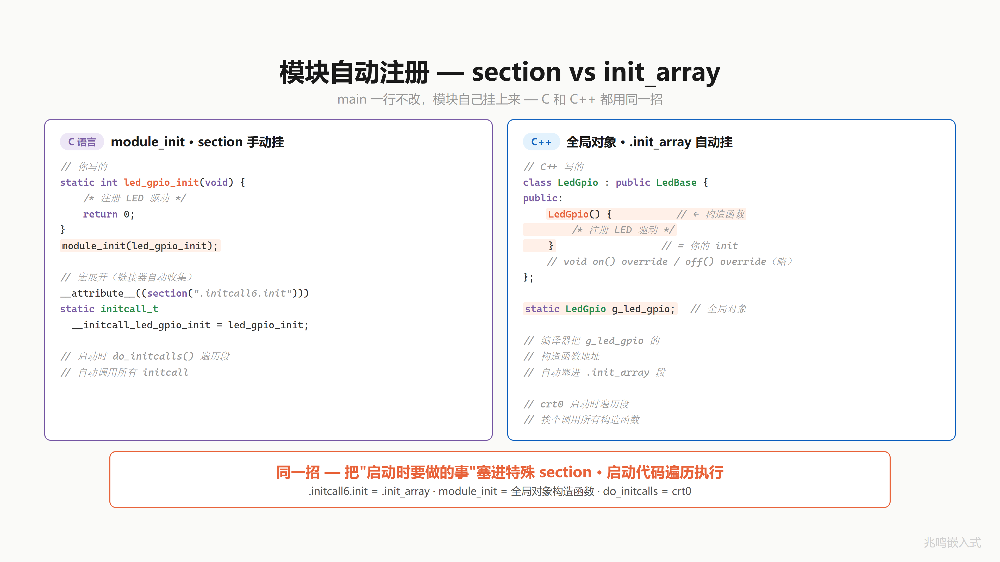
18.7 C vs C++ 全套总表
来看全貌。C 你亲手做的每一件事，C++ 都有对应的语法糖。
| 概念 | C 语言（你写的） | C++（编译器帮你写） |
|---|---|---|
| 封装 | struct + 函数（me 指针） | class + 成员函数（this） |
| 信息隐藏 | static / .h 不暴露 | private / protected |
| 构造 / 析构 | xxx_init / xxx_deinit | 构造函数 / 析构函数 |
| 继承 | struct 嵌套 LedBase | class : public LedBase |
| 基类初始化 | 调 led_base_init() | 初始化列表自动调基类构造 |
| 行为继承 | led_get_name(&x.base) | x.getName()（自动查基类） |
| 虚函数表 | LedOps struct（手动） | vtable（编译器自动生成） |
| ops 指针随身带 | base.ops = &gpio_ops（手动） | 含 virtual 的类 · 编译器自动加 vptr |
| 多态 dispatch | base->ops->on(base) | base->on()（virtual） |
| 向上转型 | &gpio_led.base（取 base 地址） | LedBase *p = &gpio_led（隐式） |
| 向下转型 | container_of（编译期减法） | dynamic_cast<T *>（运行时 · RTTI） |
| 纯虚 / 虚函数 / 接口 | NULL 检查 / 默认实现 / 全必填 | = 0 / virtual { } / 全纯虚 class |
| 模块自动注册 | module_init · section 手动挂 | 全局对象 · .init_array 自动挂 |
每一对，C++ 编译器自动做的，你亲手推了一遍。
你不再是背面向对象的名词。你知道底下发生了什么。
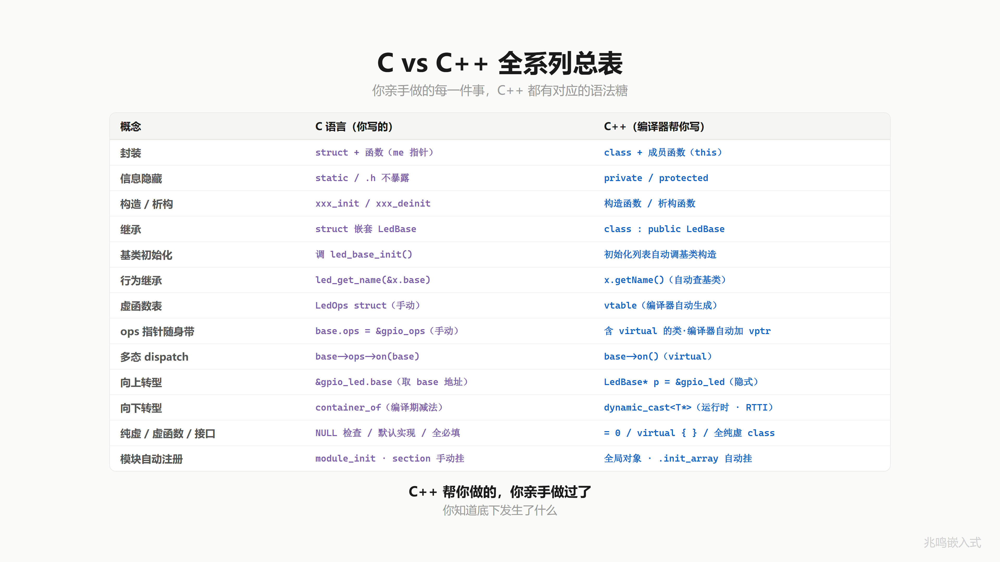
18.8 全系列学习旅程
看看你走过的路。
封装 5 期 struct + me · 三份代码 · static 隐藏 · 前缀+init · 数据归位
验证 1 期 HAL 库源码漫游 · 源码映射
继承 1 期 struct 嵌套 · 数据 + 行为共享
函数指针 3 期 函数有地址 · 延迟绑定 · ops 表 (typedef + 打包)
多态 2 期 ops 随身带（vptr） · 多态 dispatch（vcall）
向上转型 1 期 全局句柄 + 应用层零感知
向下转型 1 期 container_of 成员地址反推
虚函数接口 1 期 纯虚 / 虚函数 / 接口
完整框架 1 期 换硬件不改应用 · 全系列工具组装
分层设计 1 期 Platform 层 · 芯片层隔离
链接初始化 1 期 module_init · section 自动挂载 · main 一行不改
终章 1 期 Linux 内核映射 · 四千万行代码的骨架
18 章（视频 19 期）。从一个 LED 开始。
面向对象不是语言特性，是思维方式。
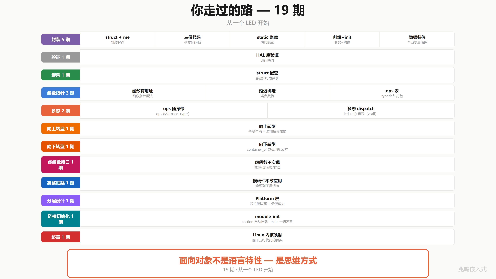
18.9 4000 万行的骨架 · 你能读了
Linux 内核 4000 万行代码，骨架就是这几招：
- struct 装数据（
struct led/struct file/struct device） - 函数指针装行为（ops 表）（
LedOps/file_operations/gpio_chip） - 嵌入式继承（子类把父类放在第一个或任意字段，C 没有
extends关键字，靠字段嵌入） - container_of 反推（成员地址 - offsetof = 外层 struct 起点）
- 多态 dispatch（
me->ops->op(me)，一行 dispatch 到具体子类实现） - 必填 + 选填 + 接口策略（assert NULL / 父类提供默认 / 全 op 必填的接口）
- 板级初始化分离硬件配置（component_cfg + board_init.c，硬件描述独立成目录，往设备树演化）
- Platform 抽象隔离芯片变化（一份 driver + N 份 platform 适配 = N+M 不再 N×M）
- 链接自动初始化（
__attribute__((section()))+ 链接器收集 + 启动期遍历，加新驱动 main 一字不动）
剩下的 3999 万行？是各种设备、各种协议、各种场景。但骨架，就是你学的这几招。
18 章前你打开内核源码，看到的是天书。
今天你打开同一段代码，你看到的是 struct，是 ops 表，是 container_of。
你能读了。
不是代码变简单了，是你变强了。
不是因为你聪明，是因为它就用了这几招。
面向对象，从来不是 class，不是 virtual，不是语法。是你看待问题的方式。
C 语言能做面向对象，是因为面向对象，从来就不在语言里，在你脑子里。
18.10 演化路径 replay · 一颗 LED 的简史
回头看走过的路。配套代码 oop-in-c/code/18-roadmap/pc/main.c 把这条路在屏幕上 replay 一遍。
Stage 1：三份独立函数（ch01）
static void s1_red_on(void) { write_reg(13, 1); }
static void s1_green_on(void) { write_reg(14, 1); }
static void s1_blue_on(void) { write_reg(15, 1); }
3 个 LED，3 份代码。每个函数体 1 行，但有 3 份。加 5 个 LED，复制 5 遍。痛点的起点。
Stage 2：struct + me 指针（ch01）
struct s2_led {
uint8_t pin;
bool is_on;
};
static void s2_led_on(struct s2_led *me)
{
me->is_on = true;
write_reg(me->pin, 1);
}
3 个 LED 共用一份 s2_led_on，传不同的 me 指针。封装最朴素的形态。
Stage 3：继承 + ops 表 + 多态（ch06 - ch11）
struct s3_led_ops {
void (*on)(struct s3_led_base *me);
};
struct s3_led_base {
const struct s3_led_ops *ops;
const char *name;
};
struct s3_led_gpio {
struct s3_led_base base;
uint8_t pin;
};
struct s3_led_pwm {
struct s3_led_base base;
uint8_t channel;
uint8_t duty;
};
/* 父类统一接口：一行 dispatch */
static void s3_led_on(struct s3_led_base *me)
{
me->ops->on(me); /* 多态 dispatch */
}
/* 两份 ops 表，一份服务 GPIO 子类，一份服务 PWM 子类 */
static const struct s3_led_ops gpio_ops = { .on = s3_gpio_on };
static const struct s3_led_ops pwm_ops = { .on = s3_pwm_on };
GPIO 灯和 PWM 灯共享 s3_led_on 接口，背后走不同的实现。多态通过 ops 表实现。
Stage 4：向上转型 + 全局句柄（ch12 - ch15）
static struct s3_led_gpio g_gpio;
static struct s3_led_pwm g_pwm;
static struct s3_led_base *g_led_red;
static struct s3_led_base *g_led_status;
static void board_init(void)
{
/* 子类对象构造：填 ops 字段 + 自己的硬件参数 */
g_gpio.base.ops = &gpio_ops;
g_gpio.base.name = "RED";
g_gpio.pin = 13;
g_pwm.base.ops = &pwm_ops;
g_pwm.base.name = "STAT";
g_pwm.channel = 1;
g_pwm.duty = 100;
g_led_red = &g_gpio.base; /* 向上转型 */
g_led_status = &g_pwm.base;
}
s3_led_on(g_led_red); /* 走 s3_gpio_on */
s3_led_on(g_led_status); /* 走 s3_pwm_on */
应用层只见 struct s3_led_base * 句柄，调同一个 s3_led_on(handle)。换硬件改 board_init 里那几行字段赋值，应用 0 修改。
Stage 5：链接自动注册（ch17）
/* drv_led.c */
static int led_init(void)
{
/* 注册 LED 驱动 */
return 0;
}
MODULE_INIT(led_init); /* 一行宏代替 main 里的手写调用 */
/* MODULE_INIT 宏的实现（来自 ch17）：
* 把 fn 的地址塞进 .my_initcall 段，链接器自动收集。
*/
#define MODULE_INIT(fn) \
static initcall_t __initcall_##fn \
__attribute__((used, section("my_initcall"))) = fn
/* 启动代码遍历该段 */
extern initcall_t __start_my_initcall[];
extern initcall_t __stop_my_initcall[];
void do_initcalls(void)
{
for (initcall_t *fn = __start_my_initcall;
fn < __stop_my_initcall; fn++)
(*fn)();
}
int main(void)
{
do_initcalls(); /* 不知道有哪些 init，但都会被调到 */
while (1) { /* 业务循环 */ }
}
main 函数 0 引用 led_init。链接器收集所有 MODULE_INIT 段，启动期遍历。加新驱动写一行宏，main 不动。这就是 ch17 的完整 demo。
跑 oop-in-c/code/18-roadmap/pc/demo：
[stage 1] ch01 - 3 LEDs, 3 copies
s1_red_on: write reg(13) = 1
s1_green_on: write reg(14) = 1
s1_blue_on: write reg(15) = 1
[stage 2] ch01 - struct + me pointer
s2_led_on(pin=13): write reg = 1
s2_led_on(pin=14): write reg = 1
s2_led_on(pin=15): write reg = 1
[stage 3] ch06-ch11 - inheritance + ops + polymorphism
s3_gpio_on [RED]: write reg(13) = 1
s3_pwm_on [STAT]: PWM ch=1 duty=100%
[stage 4] ch12-ch15 - upcasting + handle + board_init
s3_gpio_on [RED]: write reg(13) = 1
s3_pwm_on [STAT]: PWM ch=1 duty=100%
[stage 5] ch17 - linker auto registration
main never references *_init, drivers register themselves
一颗 LED，5 个阶段，5 行代码风格的演化。一路走到 Linux 内核风格的全套架构。
18.11 视频合集封面墙
视频版的 OOP 系列从第一期一路走到终章，每一期对应这本书的一个章节。

18.12 不止于这 18 章 · 工业级架构还有几座山
封装、继承、多态。这本书 18 章 OOP 主体是面向对象的基本功。
工业级嵌入式架构还有几座山：分层架构、层次化状态机、事件驱动 + 发布订阅、非阻塞驱动框架。
市面上讲 C 语法的书不少，讲 C++ 面向对象的也很多，讲 Linux 内核的也有，单独都能找到。但真正讲透 C 怎么实现 OOP 底层机制的，我看到的不多。把这套机制和 C++ 编译器自动帮你做的对应起来，更少。再和 Linux 内核驱动模型里的真实使用对应起来，我个人是真没找到合适的。
这本书想做的是把这三件事缝在一起：
C 怎么手写 OOP 底层
↓ 一一对应
C++ 编译器自动帮你做的
↓ 一一对应
Linux 内核里的真实使用
但这只是入门。后面的几座山再往上走。
我做产品做了几年，把数据拉出来给你看一组。
| 工业级数据 | 数值 |
|---|---|
| 业务代码 | 11.2 万行 |
| 业务文件 | 625 个 |
| 事件驱动模块 | 8 个 |
| 事件发布点 | 144 个 |
| 硬件抽象接口 | 8 种（adc / eeprom / rtc / i2c / spi / uart …） |
| 最深状态嵌套 | 8 层 |
| 跨项目共享 Platform | 5 套产品 · 一套抽象层 |
换主控芯片，业务代码零修改。换电机，业务零修改。换协议，业务零修改。
这些不只是数据。是每天的开发体验。
加新功能几乎都是「加一个文件」，老代码很少动。加一个新外设，驱动层加一个文件。换主控芯片，platform 层加一个文件。换整块主板方案，platform 层加几个文件，应用层不知不觉。加一个新功能，加一个层次化状态机，订阅事件。
全是「加」，不是「改」。每一层只关心自己。应用层 11 万行，一行不动。
普通嵌入式代码里那种全局 flag 一堆、if 嵌套五层、大脑根本追不下去的代码，我们的产品里很少出现。复杂逻辑交给层次化状态机。跨模块协调交给事件订阅。模块之间不互相调用，只通过事件通信。
举个真实的例子。项目早期屏幕方案还没定下来。屏幕的用户输入，我们用 shell 命令模拟；屏幕要显示什么，我们直接 printf 打到终端上。业务逻辑全部跑通，一行没动。后来屏幕方案选定，我们加了一个 UI 状态机，订阅同样的事件。命令行 UI 不用拆，业务逻辑也完全不用动。UI 和业务彻底解耦。
分层架构、层次化状态机、事件驱动 + 发布订阅，这些不是 PPT 上的名词。是真正能让 11 万行业务代码保持清醒的工具。
而这 18 章只是这套思想的入门。后面的山一座一座去做，做好了在 GitHub Issues 或 Gitee Issues 第一时间告诉你。
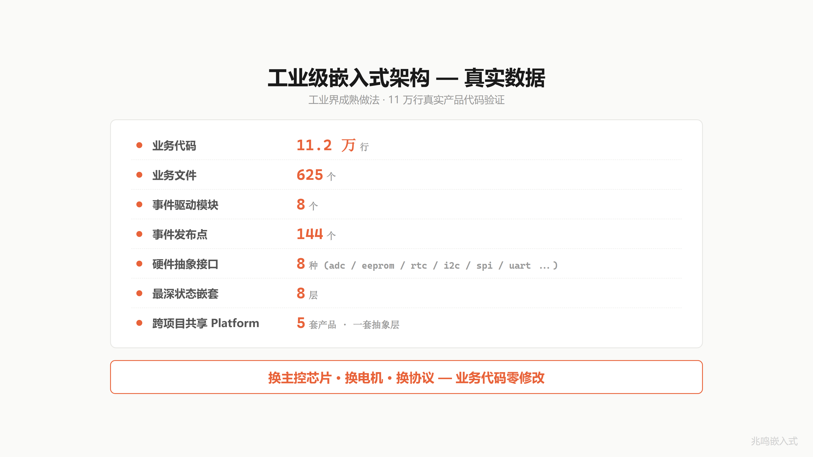
18.13 Linus Torvalds 那句话
18 章讲了一件事，但有一句话比我讲得更好。是 Linus Torvalds 说的，Linux 内核的作者：
Bad programmers worry about the code. Good programmers worry about data structures and their relationships.
差的程序员琢磨代码。好的程序员琢磨数据结构，和它们之间的关系。
Linus Torvalds, Git mailing list, 2006
整本书 18 章一直在写 struct，也一直在画 struct 之间的关系。
把这句话截图保存吧。

18.14 配套代码
把下面的代码块分别保存到对应的文件，目录结构和 oop-in-c/code/18-roadmap/pc/ 一致。make && ./demo 即可跑通。
本章配套代码不引入新机制，只把 ch01 → ch17 一颗 LED 走过的演化路径在屏幕上 replay 一遍。一份 main.c 包揽全部 5 个阶段（每段对应书里的一个章节，前面 18.10 节里贴的就是它的片段）。
文件 1：main.c（164 行）
5 个阶段：复制粘贴 → struct + me 指针 → 继承 + ops 表 + 多态 → 向上转型 + 全局句柄 → 链接自动注册（说明性占位，真实机制见 ch17）。
/* SPDX-License-Identifier: MIT */
/*
* main.c - 一颗 LED 演化路径全景
*
* 这个文件不教新东西。它把 ch01 → ch17 一颗 LED 走过的演化路径
* 在屏幕上 replay 一遍，让读者看见自己走过的路。
*
* 每一段对应书里的一个章节。每一段都能跑（虽然有些段刻意保留了
* "原始痛点"，比如 stage 1 的三份独立函数）。
*/
#include <stdint.h>
#include <stdbool.h>
#include <stdio.h>
/* ======================== Stage 1: ch01 ========================
* 三个 LED 三份代码 - 复制粘贴
*/
static void s1_red_on(void)
{
printf(" s1_red_on: write reg(13) = 1\n");
}
static void s1_green_on(void)
{
printf(" s1_green_on: write reg(14) = 1\n");
}
static void s1_blue_on(void)
{
printf(" s1_blue_on: write reg(15) = 1\n");
}
/* ======================== Stage 2: ch01 ========================
* 一份函数 + me 指针。封装的最朴素形态。
*/
struct s2_led {
uint8_t pin;
bool is_on;
};
static void s2_led_on(struct s2_led *me)
{
me->is_on = true;
printf(" s2_led_on(pin=%u): write reg = 1\n", (unsigned)me->pin);
}
/* ======================== Stage 3: ch06 - ch11 ========================
* 继承 + ops 表 + 多态 dispatch
*/
struct s3_led_base;
struct s3_led_ops {
void (*on)(struct s3_led_base *me);
};
struct s3_led_base {
const struct s3_led_ops *ops;
const char *name;
};
struct s3_led_gpio {
struct s3_led_base base;
uint8_t pin;
};
struct s3_led_pwm {
struct s3_led_base base;
uint8_t channel;
};
static void s3_gpio_on(struct s3_led_base *me)
{
struct s3_led_gpio *self = (struct s3_led_gpio *)me;
printf(" s3_gpio_on [%s]: write reg(%u) = 1\n",
me->name, (unsigned)self->pin);
}
static void s3_pwm_on(struct s3_led_base *me)
{
struct s3_led_pwm *self = (struct s3_led_pwm *)me;
printf(" s3_pwm_on [%s]: PWM ch=%u duty=100%%\n",
me->name, (unsigned)self->channel);
}
static void s3_led_on(struct s3_led_base *me)
{
me->ops->on(me); /* 多态 dispatch */
}
/* ======================== Stage 4: ch12 - ch15 ========================
* 向上转型 + 全局句柄 + 板级初始化
*/
static struct s3_led_gpio g_gpio;
static struct s3_led_pwm g_pwm;
static struct s3_led_base *g_led_red;
static struct s3_led_base *g_led_status;
static const struct s3_led_ops gpio_ops = { .on = s3_gpio_on };
static const struct s3_led_ops pwm_ops = { .on = s3_pwm_on };
static void s4_board_init(void)
{
g_gpio.base.ops = &gpio_ops;
g_gpio.base.name = "RED";
g_gpio.pin = 13;
g_pwm.base.ops = &pwm_ops;
g_pwm.base.name = "STAT";
g_pwm.channel = 1;
g_led_red = &g_gpio.base; /* 向上转型 */
g_led_status = &g_pwm.base;
}
/* ======================== Replay ======================== */
int main(void)
{
printf("=========================================\n");
printf(" ch18 - the road one LED has walked\n");
printf("=========================================\n");
printf("\n[stage 1] ch01 - 3 LEDs, 3 copies\n");
s1_red_on();
s1_green_on();
s1_blue_on();
printf("\n[stage 2] ch01 - struct + me pointer\n");
struct s2_led red = { .pin = 13, .is_on = false };
struct s2_led green = { .pin = 14, .is_on = false };
struct s2_led blue = { .pin = 15, .is_on = false };
s2_led_on(&red);
s2_led_on(&green);
s2_led_on(&blue);
printf("\n[stage 3] ch06-ch11 - inheritance + ops + polymorphism\n");
struct s3_led_gpio g = { .base = {.ops = &gpio_ops, .name = "RED"}, .pin = 13 };
struct s3_led_pwm p = { .base = {.ops = &pwm_ops, .name = "STAT"}, .channel = 1 };
s3_led_on(&g.base);
s3_led_on(&p.base);
printf("\n[stage 4] ch12-ch15 - upcasting + handle + board_init\n");
s4_board_init();
s3_led_on(g_led_red);
s3_led_on(g_led_status);
printf("\n[stage 5] ch17 - linker auto registration (see 17-initcall)\n");
printf(" main never references *_init, drivers register themselves\n");
printf("\n=========================================\n");
printf(" one LED, 17 chapters, 4000 lines covered\n");
printf("=========================================\n");
printf("\nPress Enter to exit...\n");
getchar();
return 0;
}
文件 2：Makefile（19 行）
# Makefile - ch18 roadmap recap (PC)
CC = gcc
CFLAGS = -Wall -Wextra -std=c99
TARGET = demo
SRCS = main.c
.PHONY: all clean run
all: $(TARGET)
$(TARGET): $(SRCS)
$(CC) $(CFLAGS) -o $(TARGET) $(SRCS)
run: $(TARGET)
./$(TARGET)
clean:
rm -f $(TARGET) $(TARGET).exe
跑一遍
cd oop-in-c/code/18-roadmap/pc
make
./demo
期望输出
=========================================
ch18 - the road one LED has walked
=========================================
[stage 1] ch01 - 3 LEDs, 3 copies
s1_red_on: write reg(13) = 1
s1_green_on: write reg(14) = 1
s1_blue_on: write reg(15) = 1
[stage 2] ch01 - struct + me pointer
s2_led_on(pin=13): write reg = 1
s2_led_on(pin=14): write reg = 1
s2_led_on(pin=15): write reg = 1
[stage 3] ch06-ch11 - inheritance + ops + polymorphism
s3_gpio_on [RED]: write reg(13) = 1
s3_pwm_on [STAT]: PWM ch=1 duty=100%
[stage 4] ch12-ch15 - upcasting + handle + board_init
s3_gpio_on [RED]: write reg(13) = 1
s3_pwm_on [STAT]: PWM ch=1 duty=100%
[stage 5] ch17 - linker auto registration (see 17-initcall)
main never references *_init, drivers register themselves
=========================================
one LED, 17 chapters, 4000 lines covered
=========================================
一颗 LED，5 个阶段，5 行代码风格的演化。看自己一路走过的路。
18.15 视频回放
写在最后
走完这本书，你再看任何 C 代码，眼里都是设计。
不管你刚入行，还是已经做了 5 年、10 年，能走到这里，你已经在路上了。